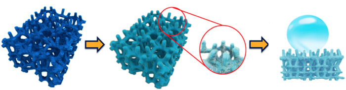
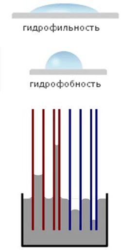

<div id="howitworks" class="theory">
    <div class="container">
      <div class="row">
        <div class="col-md-12">
          <h2 class="theory__title">Як це <span class="theory__highlight">працює?</span></h2>
          <p class="theory__desc">Теорія</p>
        </div>
        <div class="col-md-9">
          <div class="theory__content">
            <p class="theory__content-vis">
              Розглянемо для початку гладкі поверхні. Коли говорять, що поверхня добре змочується водою,
                                це означає, що покладена на неї крапля розтечеться і буде прагнути зайняти якомога більшу площу.
                                Таку поверхню по-іншому називають <span class="theory__content-highlight">гідрофільною</span>. 
            </p>
            <p class="theory__content-vis">
              Якщо ж поверхня погано змочується водою, то крапля буде не розтікатися, а навпаки буде прагнути
                                зайняти якомога меншу площу і прийняти форму близьку до сферичної. Таку поверхню називають
              <span class="theory__content-highlight">гідрофобною</span>. 
              Навіть на самій гідрофобній гладкій поверхні крапля приймає форму лише близьку до півсфери, а не сфери. Площа їх контакту все ще досить велика.
            </p>
            
            <p class="theory__content-invis">
              Тепер розглянемо капіляри. Капіляром називають будь-яку трубочку, досить тонку для прояву капілярного
                                ефекту. Капілярний ефект полягає в тому, що якщо занурити капіляр в воду, то рівень води в ньому буде
                                відрізнятися від рівня води зовні. Якщо внутрішні стінки капілярів гідрофільні, то рівень буде вище, тобто
                                капіляр "всмоктує" воду. Відбувається це тому, що вода намагається зайняти якомога більшу площу, як і в разі
                                з рівною поверхнею. Чим гідрофільніший капіляр, тим вище підніметься вода. За допомогою цього ефекту, наприклад,
                                рослини вбирають воду з землі. Якщо ж внутрішні стінки капілярів гідрофобні, то рівень води в ньому виявиться
                                нижче, ніж навколо нього. Це викликано тим, що вода прагне змочити якомога меншу площу, як і у випадку з
                                рівною поверхнею. Чим гідрофобніше капіляр, тим сильніше з нього виштовхується вода. Крім змочуваності, на
                                капілярний ефект істотно впливає внутрішній діаметр капіляра. Чим він менше, тим сильніше ефект.
            </p>
            <p class="theory__content-invis">
              Нарешті, прийшов час поговорити про тканину і інші пористі поверхні. Пори - це малениким тунелі,
                                тріщинки і інші порожнини, які являють собою ніщо інше, як капіляри. Оскільки більшість пористих
                                матеріалів мають гідрофільну природу, то капілярний ефект "всмоктує" воду глибоко всередину таких матеріалів. Звичайні
                                гідрофобізатори для пористих поверхонь просто закупорюють пори, створюючи на поверхні гідрофобну плівку, яка
                                сильно знижує паропроникність матеріалу. Більш якісні гідрофобізатори покривають найтоншим шаром внутрішню
                                поверхню пір і надають їм гідрофобні властивості. Внаслідок цього вода не проникає глибоко всередину, але все ж
                                змочує поверхню і проникає на невелику глибину, як у випадку з гідрофобними капілярами на малюнку. Виправити
                                цю ситуацію можна, як випливає з вищесказаного, збільшивши гідрофобність шару і зменшивши діаметр капілярів.
                                Aquaphob діє саме так. Але як змінити діаметр пір не змінюючи властивостей матеріалу? Це секрет новітньої
                                технології, яка використовується в Aquaphob. Компоненти цього інноваційного засобу формують всередині пір і на
                                поверхні матеріалу не гладку плівку, а розгалуджену нанорозмірну структуру. Таким чином, капіляри в цій
                                структурі, які в тисячі і мільйони разів менше, ніж пори оброблюваного матеріалу, утворюють багаторівневу
                                пористість. Потрапляючи на таку поверхню, вода проникає вглиб цих капілярів всього на кілька нанометрів
                                (Нанометр в 1 000 000 разів менше міліметра) і лежить на поверхні цієї структури як на голочка. Оскільки
                                площа контакту води і твердого тіла в такому випадку близька до нуля крапля води приймає форму сфери, яка
                                легко рухома. Такий ефект і називають супергідрофобним.
            </p>
            <p class="theory__content-invis">
                                
                            </p>
          </div>
        </div>
        <div class="col-md-3 hidden-sm hidden-xs">
          
        </div>
      </div>
    </div>
  </div><!-- end theory  -->